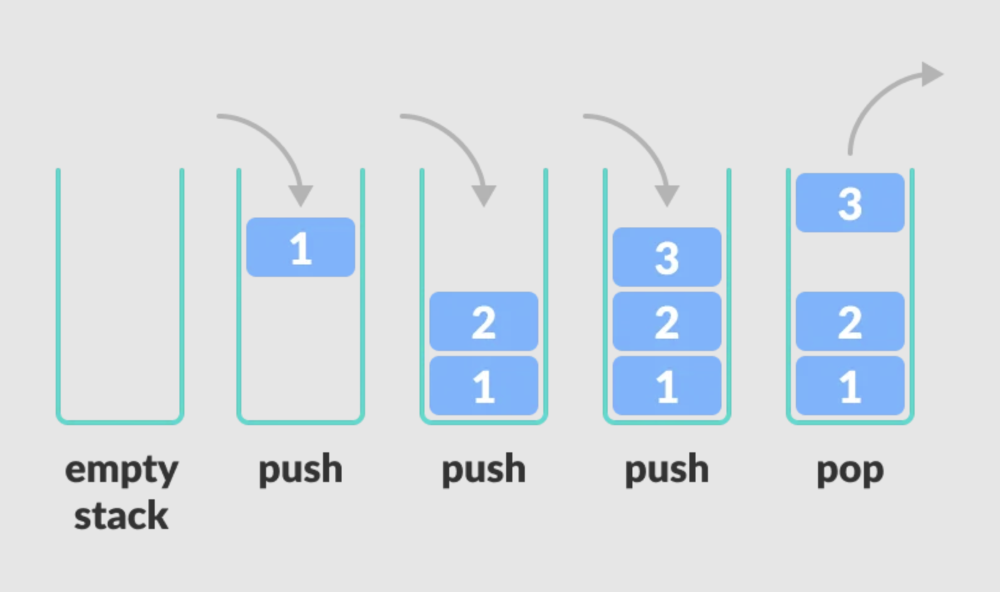
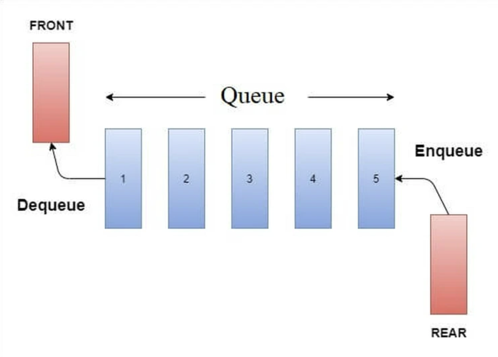
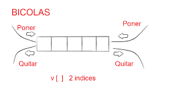
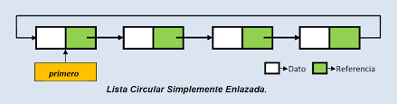
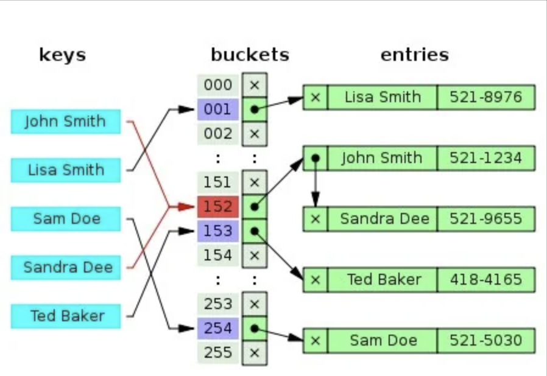

Programación
Estructuras de datos
Índice
- Introducción
- Tipos
- Ejemplos
- Ejercicios
Introducción
Las estructuras de datos son fundamentales en la programación, ya que permiten organizar y gestionar la información de manera eficiente.
Entre las más utilizadas están las pilas, colas, listas y estructuras más avanzadas como montículos y tablas hash.
En Java, las estructuras de datos se pueden implementar de diversas formas. Aquí lo haremos utilizando arrays estáticos.
Índice
- Introducción
- Tipos
- Ejemplos
- Ejercicios
Tipos
- Pila (Stack)
- Cola (Queue)
- Doble cola (Deque)
- Lista circular
- Tabla hash
- Montículo (Heap)
Tipos
Pila (Stack)
Estructura de datos de tipo LIFO (Last In, First Out), donde el último elemento en entrar es el primero en salir.
Se usa en escenarios como la gestión de llamadas recursivasm, la evaluación de expresiones matemáticas o las opciones de deshacer/rehacer en editores.

Tipos
Cola (Queue)
Estructura que sigue el principio FIFO (First In, First Out), donde el primer elemento en entrar es el primero en salir.
Se utiliza en sistemas de gestión de procesos, colas de impresión y transmisión de datos.

Tipos
Doble cola (Deque)
Estructura que permite la inserción y eliminación de elementos tanto por el frente como por el final.
Es útil en algoritmos de búsqueda y en la gestión de buffers de datos.

Tipos
Lista circular
Variante de la lista en la que el último elemento está conectado al primero, formando un ciclo.
Se emplea en la reproducción en bucle de música y en la programación de tareas en sistemas operativos.

Tipos
Tabla hash
Almacena datos de manera eficiente mediante una función de dispersión (hash) y en el caso de haber colisiones, las gestiona mediante la técnica de sondeo lineal.
Usada para ofrecer búsquedas rápidas de elementos en bases de datos y sistemas de almacenamiento en caché. También para detección de duplicados.

Tipos
Montículo (Heap)
Estructura de datos basada en un árbol binario que mantiene una jerarquía entre sus elementos.
Se usa en la implementación de colas de prioridad y en algoritmos como Dijkstra y HeapSort.
Índice
- Introducción
- Tipos
- Ejemplos
- Ejercicios
Ejemplos: Pila
public class Pila {
private int[] elementos;
private int tope;
public Pila(int capacidad) {
elementos = new int[capacidad];
tope = -1;
}
public void apilar(int valor) {
if (tope < elementos.length - 1) {
elementos[++tope] = valor;
}
}
public int desapilar() {
if (tope >= 0) {
return elementos[tope--];
}
return -1; // Indicar error
}
}
Ejemplos: Cola
public class Cola {
private int[] elementos;
private int frente, fin, tamano;
public Cola(int capacidad) {
elementos = new int[capacidad];
frente = 0;
fin = -1;
tamano = 0;
}
public void encolar(int valor) {
if (tamano < elementos.length) {
fin = (fin + 1) % elementos.length;
elementos[fin] = valor;
tamano++;
}
}
public int desencolar() {
if (tamano > 0) {
int valor = elementos[frente];
frente = (frente + 1) % elementos.length;
tamano--;
return valor;
}
return -1;
}
}
Ejemplos: Cola doble
public class Deque {
private int[] elementos;
private int frente, fin, tamano;
public Deque(int capacidad) {
elementos = new int[capacidad];
frente = 0;
fin = -1;
tamano = 0;
}
public void insertarFrente(int valor) {
if (tamano < elementos.length) {
frente = (frente - 1 + elementos.length) % elementos.length;
elementos[frente] = valor;
tamano++;
}
}
public void insertarFin(int valor) {
if (tamano < elementos.length) {
fin = (fin + 1) % elementos.length;
elementos[fin] = valor;
tamano++;
}
}
public int eliminarFrente() {
if (tamano > 0) {
int valor = elementos[frente];
frente = (frente + 1) % elementos.length;
tamano--;
return valor;
}
return -1;
}
public int eliminarFin() {
if (tamano > 0) {
int valor = elementos[fin];
fin = (fin - 1 + elementos.length) % elementos.length;
tamano--;
return valor;
}
return -1;
}
}
Índice
- Introducción
- Tipos
- Ejemplos
- Ejercicios
Ejercicio 1: Simulador de Navegación Web (Pila)
Crea una clase HistorialNavegacion que permita simular la navegación web usando una pila. Debe permitir:
- Visitar una página (se apila la URL).
- Retroceder a la página anterior (se desapila la última URL visitada).
- Mostrar el historial de navegación.
Ejercicio 2: Gestión de una Cola de Impresión (Cola)
Diseña una clase ColaImpresion para gestionar una cola de impresión. La clase debe permitir:
- Añadir un documento a la cola (nombre del documento y número de páginas).
- Procesar un documento (se retira de la cola el primero en entrar).
- Mostrar el estado de la cola.
Ejercicio 3: Lista de Tareas Pendientes (Lista)
Crea una clase ListaTareas para gestionar una lista de tareas. La clase debe permitir:
- Añadir una nueva tarea (descripción y prioridad).
- Eliminar una tarea por su posición en la lista.
- Mostrar todas las tareas en orden.
Repasar y profundizar
Tips de la presentación
¿Imprimir en PDF?
- Clic aquí
- CTRL/CMD + P
- Guardar como PDF
Navegar por las diapositivas
- Pulsa ESC
- Clic a la que quieras ir